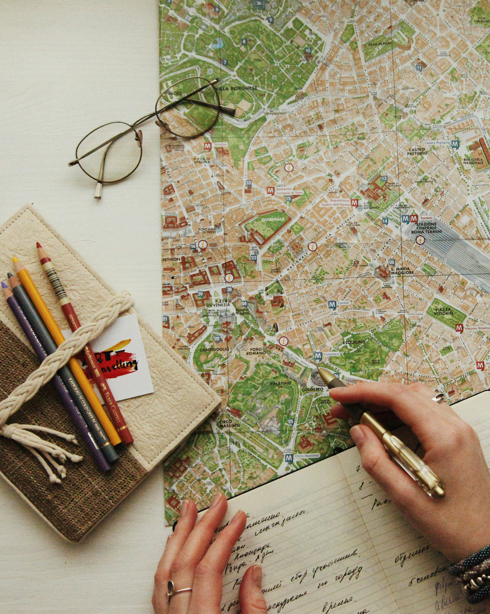

Die Geschichte und die Mission
„The travel tea“ wurde von Tea Aliaj gegründet, einer Studentin der TU Wien und begeisterten Reisenden. Ihre Idee war es, eine Plattform zu schaffen, die kuratierte Reiseführer auf der Grundlage ihrer persönlichen Reiseerfahrungen bietet. Ihre Liebe zu authentischer lokaler Küche, gemütlichen Unterkünften, einzigartigen Reiserouten und versteckten Juwelen spiegelt sich in ihren Empfehlungen wider, die das gewöhnliche Reiseerlebnis zu einem authentischeren Erlebnis vor Ort machen.
Da jedoch kein Reisender dem anderen gleicht, haben wir unsere maßgeschneiderten Reiseführer ins Leben gerufen, die sicherstellen, dass Ihre Reise ganz auf Ihre Vorlieben zugeschnitten ist. The Travel Tea ist mehr als nur eine Reiseplattform – es ist ein Ort, der das Reisen wieder spannend macht und Ihnen unentdeckte kulturelle Erlebnisse näherbringt.

Unser team
The travel tea wäre nicht das, was er ist, ohne die gemeinsame Arbeit von Innovatoren, Kreativen und Kulturliebhabern, die sich zusammengetan haben, um die Art und Weise, wie du die Welt erlebst, neu zu gestalten. Lerne das Team kennen, das dies ermöglicht hat!

Tea Aliaj
CEO & Gründerin
Tea gründete „The travel tea“ während ihres Studiums an der TU Wien, und wenn sie nicht arbeitet, ist sie unterwegs, um neue Städte und hidden gems für eure nächsten Reiseführer zu entdecken.

Birgit Wagner
CTO
Brigit leitet unsere technische Abteilung und sorgt für eine schnelle und sichere Plattform für alle Nutzer von „The travel tea“.

Daniela Gruber
CFO
Daniela behält unsere Finanzen im Blick und sorgt dafür, dass unser Wachstum nachhaltig ist.
Fabian Fischer
CMO
Fabian ist der kreative Kopf hinter unserer Marke und baut unsere digitalen Plattformen aus, damit unsere Mission Reisende auf der ganzen Welt erreicht.
Emil Moser
Leitender Entwickler
Emil ist der Genie hinter unserem Code; er entwickelt und optimiert unsere Plattform, damit sie so benutzerfreundlich wie möglich ist.
Unternehmensdetails & Geschäftsmodell
Unternehmensdaten:Aliaj GmbH
-
Standort: Mariahilfer Straße 45/3, 1060 Wien, Österreich
Anzahl der Mitarbeiter: 5
-
Produkt: The travel tea Guide Platform
Eine Website (Software-as-a-Service), auf der Nutzer maßgeschneiderte Reiseführer bestellen können, die von echten Menschen zusammengestellt wurden und sich darauf konzentrieren, Ihr Reiseerlebnis durch lokales Fachwissen zu verbessern.
-
Geschäftsmodell:Fremium
Basis-Plattform: Der Zugang zur Webplattform sowie das Lesen allgemeiner Stadtblogs und grundlegender Tipps des Gründers sind kostenlos.
Premium-Service: Für die Erstellung eines vollständig personalisierten Reiseführers, der individuell auf die Wünsche des Kunden zugeschnitten wird, fällt eine einmalige Gebühr von 4,99 € pro Reiseführer an. Dieser wird von Reiseexperten digital per E-Mail zugestellt.
Markenrecht & Klassifikation
1.Unsere Markenformen
Wir haben drei verschiedene Kategorien von Markenrechten für „The travel tea“ ermittelt:
-
Wort-Bildmarke
Unser Hauptlogo. Es ist unser markantestes Merkmal: die Kombination aus dem Schriftzug und einer Illustration, die eine Teetasse und ein Flugzeug zeigt.
-
Mustermarke
Das von uns entworfene „all-over-print“-Muster (Hauptlogo: Teetasse und Flugzeug, Reisepass, Reisestempel). Es dient als Hintergrund für unsere digitalen Reiseführer.
-
Farbmarke
Schutz unserer spezifischen Farbkombination aus „Catalina Blue“ (#1d3557) und „Golden Sand“ (#e9c46a). Diese Farben helfen uns, uns auf dem Markt für Reiseplattformen von der Masse abzuheben.
2.Nizza Klassen(Nizza 13. Ausgabe,2026)
Für „The Travel Tea“ wurden zum Schutz unserer Software und unserer Dienste die folgenden Klassen gemäß der aktuellen Nizza-Klassifikation (Version 2026) ausgewählt:
Klasse 9 :
Herunterladbare Multimediadateien (personalisierte Reiseführer im PDF-Format); in Zukunft werden wir auch Computersoftware zur Darstellung von Reiseinformationen anbieten.
Klasse 39 :
Dienstleistungen im Bereich Reiseplanung; Bereitstellung personalisierter Reiseinformationen und Routenplanung über eine Online-Plattform.
Klasse 42 :
Software as a Service (SaaS);Entwurf und Entwicklung von Computersoftware; Bereitstellung einer Online-Plattform zur Erstellung von Reiseplänen.